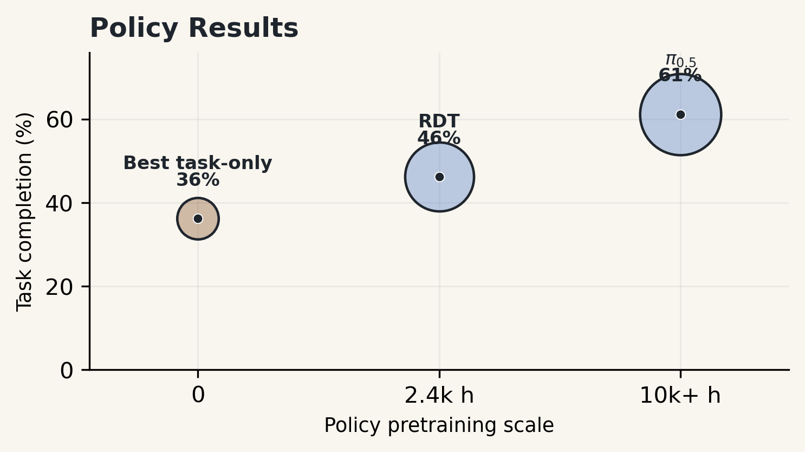
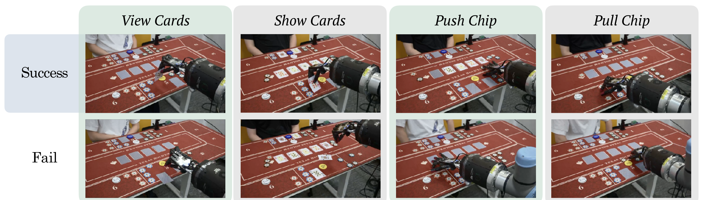
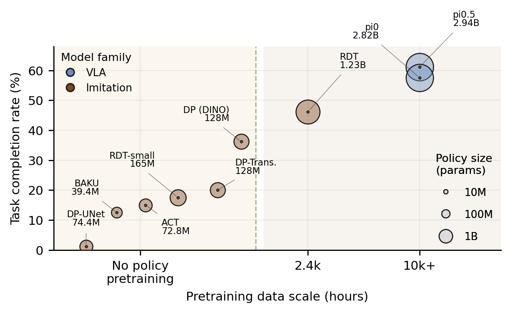
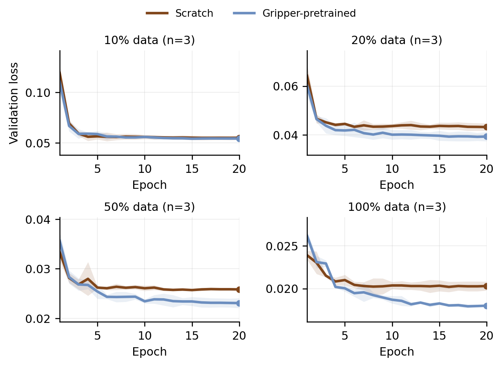
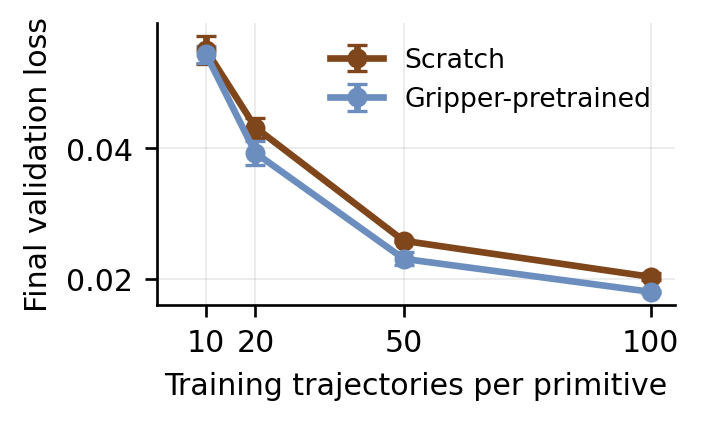

SP
Scene-preserving success: the primitive is completed and the tabletop remains usable.
Benchmark Results
Policy results are measured over 80 real-world primitive rollouts per model. Perception results use strict problem-level exact-match over 36 tabletop states, plus field-wise diagnostic accuracies.

Policy Benchmark
Nine policies spanning two model families are evaluated under the same primitive schedule, observation interface, and physical scoring rubric. The table reports raw outcome counts (SP, DC, TF, DF) and the two aggregate rates: scene-preserving success rate (SPSR) and task completion rate (TCR).
Scene-preserving success: the primitive is completed and the tabletop remains usable.
Disruptive completion: the goal is achieved but the scene is disturbed enough to prevent continuation.
Task failure: the primitive is not completed, but the scene remains stable for retry.
Disruptive failure: the primitive fails and the environment must be reset.
| Policy | Family | Params | SP | DC | TF | DF | N | SPSR | TCR |
|---|---|---|---|---|---|---|---|---|---|
| π0.5 | VLA | 2.94B | 38 | 11 | 31 | 0 | 80 | 47.5% | 61.2% |
| π0 | VLA | 2.82B | 38 | 8 | 33 | 1 | 80 | 47.5% | 57.5% |
| RDT | Robot-pretrained | 1.23B | 24 | 13 | 40 | 3 | 80 | 30.0% | 46.2% |
| DP (DINO) | Task-trained | 128M | 21 | 8 | 48 | 3 | 80 | 26.2% | 36.2% |
| DP-Transformer | Task-trained | 128M | 11 | 5 | 46 | 18 | 80 | 13.8% | 20.0% |
| RDT-small | Task-trained | 165M | 11 | 3 | 59 | 7 | 80 | 13.8% | 17.5% |
| ACT | Task-trained | 72.8M | 8 | 4 | 67 | 1 | 80 | 10.0% | 15.0% |
| BAKU | Task-trained | 39.4M | 5 | 5 | 67 | 3 | 80 | 6.2% | 12.5% |
| DP-UNet | Task-trained | 74.4M | 1 | 0 | 79 | 0 | 80 | 1.2% | 1.2% |

Policy Analysis
The bubble chart maps each policy by pretraining data scale (x-axis), policy-only parameter count (bubble size), and physical task completion rate (y-axis). VLA-family models with large-scale robot pretraining occupy the upper right; task-trained baselines cluster toward the lower left.

RDT Scaling Diagnostics
Two diagnostic views isolate how gripper-pretrained initialization interacts with DexHoldem-specific fine-tuning data. The left panel tracks physical task completion under data-ratio ablation; the right panel shows the corresponding final validation loss.


Perception Benchmark
Each perceiver is deployed inside its native coding-agent harness and evaluated on 36 real-deployment tabletop states. Overall is strict problem-level exact-match; field-wise columns report per-field accuracy on applicable subsets. The best field-wise average is 66.8% (GPT 5.5) while the best strict exact-match is 34.3% (Opus 4.7).
| Harness | Perceiver | Overall | LS | TO | BI | CC | CB | RCI | OCI | SO | Avg |
|---|---|---|---|---|---|---|---|---|---|---|---|
| Codex | GPT 5.5 | 31.5 | 72.2 | 80.6 | 100.0 | 61.5 | 45.8 | 62.5 | 35.4 | 76.2 | 66.8 |
| Codex | GPT 5.4 | 31.5 | 65.7 | 93.5 | 100.0 | 23.1 | 31.2 | 56.2 | 18.8 | 47.6 | 54.5 |
| Codex | GPT 5.4 mini | 25.9 | 56.5 | 94.4 | 99.1 | 33.3 | 14.6 | 29.2 | 18.8 | 47.6 | 49.2 |
| Claude Code | Opus 4.7 | 34.3 | 43.5 | 93.5 | 100.0 | 43.6 | 31.2 | 37.5 | 43.8 | 0.0 | 49.1 |
| Claude Code | Sonnet 4.6 | 25.0 | 46.3 | 88.0 | 100.0 | 23.1 | 10.4 | 29.2 | 22.9 | 14.3 | 41.8 |
| Claude Code | Haiku 4.5 | 13.9 | 47.2 | 68.5 | 91.7 | 35.9 | 12.5 | 25.0 | 18.8 | 0.0 | 37.4 |
| Gemini CLI | Gemini 3 Flash | 20.4 | 63.9 | 77.8 | 100.0 | 28.2 | 18.8 | 29.2 | 22.9 | 71.4 | 51.5 |
| Gemini CLI | Gemini 3.1 Flash L. | 10.2 | 27.8 | 73.1 | 94.4 | 28.2 | 12.5 | 22.9 | 14.6 | 0.0 | 34.2 |
Perception Bottlenecks
Blind information (BI) and turn ownership (TO) are near-ceiling for most models, since they rely on game-flow reasoning rather than fine-grained visual parsing.
Community card recognition (CC) ranges from 23% to 62%, reflecting difficulty in reading partially occluded or angled card faces from the agent view.
Current bets (CB) and chip inventories (RCI, OCI) are the hardest fields, requiring the perceiver to locate, identify, and count physical chip stacks.
Showdown outcome (SO) is binary but context-dependent: some models score 0% because they never detect the opponent folding or the hand concluding.
Key Observations
Large-scale robot-pretrained VLA policies (pi0.5, pi0) achieve the highest task completion rates. Pretraining on diverse manipulation data transfers meaningfully to the ShadowHand domain despite the 30-DOF action-space gap.
Even the best policy shows a 14-point gap between task completion (61.2%) and scene-preserving success (47.5%). Disruptive completions are common: the target object moves correctly but surrounding cards or chips are displaced.
No perceiver exceeds 34.3% strict exact-match. The gap between field-wise average (66.8%) and exact-match shows that errors across different fields compound: getting every field right simultaneously remains challenging.